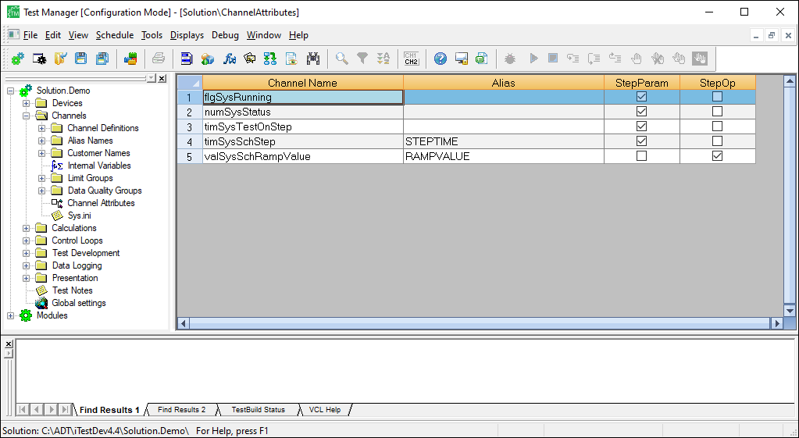

iTest User's Guide
The Channel Attributes editor is used to mark channels as being available for use in set value tables, step tasks, and circuits. These channels could be used, for example, as a step parameter, a step operand, or both in a Step Condition (EOS). This editor is available in Test Manager and FlexEdit. This document details how to use the editor in Test Manager; refer to the FlexEdit Editors documentation for how to use the editor in FlexEdit.
In order for channels to appear in the Channel Attributes editor, the channel's User Defined1 RDB field must be greater than 1. For more information about this field, refer to its entry in the RDB Field Definitions documentation.
In the Channel Attributes editor, you can list additional channels for use, remove channels, show the channel's alias or customer name, and mark the channel as a step parameter and/or step operand. Marking virtual output channels as step parameters and/or step operands allows them to be used in set value tables; refer to the Set Value Tables documentation for more information.
Channel Attributes Editor

Column Descriptions
| Column | Description |
| Channel Name | (Read-only) The name of the channel. |
| Alias/Customer Name | (Read-only) The alias used for the channel or the channel's customer name. If an alias has not been defined for the channel, then the customer or module name will be listed; the customer name takes precedence over the module name. If a customer or module name has not been assigned to the channel, then this field will be empty. |
| StepParam | When checked, the channel is marked for use as a step parameter. |
| StepOp | When checked, the channel is marked for use as a step operand. |
The following right-click options are available in the editor:
Right-Click Options
| Option | Description |
| Insert Before | Adds a new row before the highlighted row. Double-click the cell in the Channel Name column to launch the Channel Selection dialog to select a channel for use. |
| Add to End | Adds a new row at the end of the list. Double-click the cell in the Channel Name column to launch the Channel Selection dialog to select a channel for use. |
| Delete | Deletes the selected row. |
| Show Alias/Customer Name | Shows the Alias or Customer Name column. |